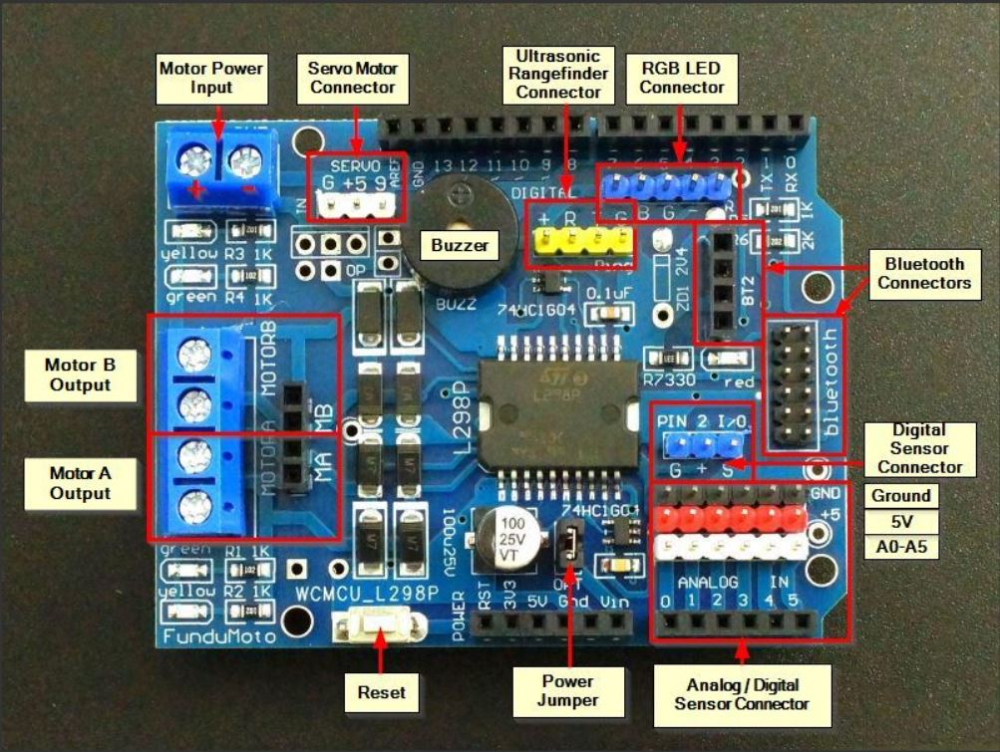

CarBot: A Smart Line-Following Robot
Overview
CarBot is an intelligent robot designed to follow a line or path autonomously using sensors and actuators. It’s an excellent project for students learning robotics, Arduino programming, and sensor integration. The CarBot introduces foundational concepts in robotics such as sensor input, decision-making, and motor control
How it works
CarBot primarily uses line-following sensors to detect a line on the surface, often marked in black on a white background or vice versa. By continuously reading the sensor data, CarBot adjusts its wheels' motion to stay on the line.
Key Components
- Arduino Microcontroller: Acts as the "brain" of the robot, processing data and sending commands.
- Line-Following Sensors: Detect the line and send signals to the Arduino.
- Motor Driver: Controls the speed and direction of the wheels.
- Wheels and Chassis: The physical components that move and carry the robot.
- Ultrasonic sensor: Detects the distance of an object
- Piezo Buzzer: Use as a sound signal.
Flowchart for CarBot Functionality
- Initialization: The Arduino initializes sensors and motor drivers.
- Sensor Reading: IR sensors detect whether they’re on the line or off.
- Decision-Making: Based on the sensor readings, the Arduino determines if the robot needs to turn left, right, or go straight.
- Motor Control: The Arduino sends commands to the motor driver to adjust wheel speed or direction.
- Repeat: The process loops continuously, allowing the CarBot to follow the line.
Motor Setup
int enablerA = 10; // speed control
int motorA = 12;
int enablerB = 11; // speed control
int motorB = 13;
void setup(){
pinMode(enablerA,OUTPUT);
pinMode(motorA,OUTPUT);
pinMode(enablerB,OUTPUT);
pinMode(motorB,OUTPUT);
}
void loop() {
digitalWrite(motorA,HIGH);
analogWrite(enablerA,255);
digitalWrite(motorB,HIGH);
analogWrite(enablerB,255);
}

Description
This Motor Driver Shield based on L298P motor driver IC is capable of driving two brushed motor, with speed, direction, start and stop simultaneously. With two full H-bridge circuit, this motor driver shield can also drive bipolar or unipolar stepper motor.
Besides the L298P driver IC, it comes with tones of header pins and female header for GPIO of Arduino. The ADC pins of Arduino main board are being extended to SVG (Signal Voltage Ground), RC servo alike header pins. Making it simple for you to connect to sensor module with the extra pin of GND and 5V. Not to forget there are two types of Bluetooth module, mainly the HC05 or HC06. Another type bluetooth connector is seldom being utilized. This multi-featured motor shield based around the L298P driver chip fits onto Arduino Uno or other Arduino UNO compatible boards.
Logic Power subsystem:
The Arduino's 5V is brought up to the shield and is available on:
- 6 sets of red sensor 5V pins(SVG) for Analog pin
- Yellow Ping connector for Ultrasonic Rangefinders
- Used to power the logic portion of the L298P chip.
The Arduino's 3.3V is brought up to the shield and is available on the 2 Bluetooth connectors. Arduino main board can be powered separately using the normal USB or DC power connector or alternatively, it can also be powered from this Shield. To select this power path, there is a jumper near the electrolytic cap labeled ‘OPT’. When this jumper is removed, the Arduino must be powered separately. When the jumper is installed, the power from the motor VMS power connector is connected to the Vin pin on the Arduino which feeds the Arduino on-board 5V regulator. To use this option, the motor power input must be at least 6.5VDC and less than 12VDC to feed the regulator. If powering the Arduino off the shield, the DC power jack on the Arduino should not be used to avoid a power conflict, but the USB can be used.
Motor Power Subsystem:
The motor power comes in on the 2-pos screw terminal. The VMS is the positive motor voltage which can range from 4.8 to 24VDC. If you are using this input to power the Arduino by installing the ‘OPT’ jumper, the maximum input voltage on this terminal should be limited to 12V to avoid overheating the Arduino regulator.
VMS = Motor Vcc which must be between 4.8 and 24VDC GND = Motor Ground This motor power is fed to a 5V regulator that is mounted to the bottom of the shield. This 5V feeds the white servo connector(near to buzzer). This isolates any servo electrical noise from getting back into the main 5V that powers the logic. For this 5V regulator to function, the VMS voltage must be at least 6.3V and limited to 12VDC max to avoid heat to the 5V regulator.
Note: If you have the OPT jumper in place and USB connected, but there is no power on the VMS motor connector, it will try to use the USB power to power the DC motors. This should be avoided.
If you have the OPT jumper in place and power coming on the DC Jack on the Arduino, it will work but the DC motor noise will be coupled into the 5V logic power supply and may cause eradicate behavior and so it is not really recommended. In general, if you are using the motors, you should plan to bring the motor power in on the VMS power connector for the most stable operation.
Driving DC Motors:
The L298P contains two full H-Bridge drive channels that provide full speed and direction control. The 2 DC motor drive channels can operate at voltages from 4.8 – 24V and at currents of up to 2.0A (peak) and 1.0A continuous per channel.
You can also have 2 motors share a motor drive channel as long as the combined current stays within the 2A and you don’t mind the motors turning the same direction and speed. This is typically the case when you have a 4 wheel drive robotic vehicle and the 2 wheels on each side operate at the same speed and direction.
The L298P motor driver uses Arduino pins D10, D11, D12 and D13 for motor control. Pins 10 & 11 are PWM pins and connect to the chip EN pins to provide speed control by modulating the enable input. D10 controls speed of motor A and D11 controls speed of motor B. Pins 12 & 13 are connected to the IN inputs to provide direction control. Pin 12 controls direction of motor A and Pin 13 controls direction of motor B. Usually there are 2 pins used to determine the direction of rotation for each motor, but this shield has an inverter that provides an inverted version of the signal to the two pins. This reduces the number of pins used on the Arduino, but it does remove the ability to do dynamic braking which usually isn’t an issue for most projects. Reducing the speed control pins to a PWM value of zero will get things stopped.
DC Motor Connections:
The motor connections are via a 4-way screw terminal block with 2 terminals for each motor that are labeled MOTORA and MOTORB.
The +/- pins for each motor are not labeled, so it is somewhat arbitrary how your wire them and relative to what you consider forward vs reverse motor operation. Basically if the motor goes in the opposite direction than you expect, simply reverse the wiring for that motor.
These motor connection points are also mirrored on a 4-pin female header for a little more flexibility.
These motor drive leads also have yellow and green LEDs attached to them. Their brightness will vary depending on the strength of the PWM signal.
Servo Motor Connections:
Servo motors are 3 wire devices. They require 5V, Ground and a PWM signal to set its position. The shield uses D9 for the PWM signal. One nice feature of these modules is that it has a dedicated 5V regulator to power the servo to prevent electrical noise from getting back into the main 5V logic power.
Servos are typically used to turn a small steering wheel or to rotate a sensor, such as an ultrasonic rangefinder for obstacle avoidance.
To use the servo, you will need to have a minimum of 6.5VDC on the main motor power connector for the regulator to operate.
If you are not using a servo, D9 as well as this dedicated 5V is available for other uses.
Arduino to Shield Pin Connections:
All of the I/O is brought up to stackable female headers on the shield except for the IOREF and the two I2C pins hear the USB connector so it can support a daughter shield as long as it does not conflict with the pins in use. In addition, many of these pins are broken out to other headers for easy hookup.
The shield uses the following pins which remain available if you are not using that function:
- Ultrasonic Sensor Ping Control = D7, D8
- Servo motor control = D9
- DC motor control = D10,D11, D12, D13
- Buzzer = D4
- Bluetooth
There are two Bluetooth connectors on the board. The first connector is a 4-pin header that brings out 3.3V power, ground, TX and RX. This type of connector is compatible with HC05 or HC06
Bluetooth modules and perhaps some others. The Receive pin has a 1K/2K voltage divider to level shift the TX output of the Arduino to be 3.3V compatible which is a nice feature.Pin Configuration

Cytron Link
Ultrasonic Sensor Setup
Complete Guide for Ultrasonic Sensor HC-SR04 with Arduino by Randomnerd
/*
* created by Rui Santos, https://randomnerdtutorials.com
*
* Complete Guide for Ultrasonic Sensor HC-SR04
*
Ultrasonic sensor Pins:
VCC: +5VDC
Trig : Trigger (INPUT) - Pin11
Echo: Echo (OUTPUT) - Pin 12
GND: GND
*/
int trigPin = 11; // Trigger
int echoPin = 12; // Echo
long duration, cm, inches;
void setup() {
//Serial Port begin
Serial.begin (9600);
//Define inputs and outputs
pinMode(trigPin, OUTPUT);
pinMode(echoPin, INPUT);
}
void loop() {
// The sensor is triggered by a HIGH pulse of 10 or more microseconds.
// Give a short LOW pulse beforehand to ensure a clean HIGH pulse:
digitalWrite(trigPin, LOW);
delayMicroseconds(5);
digitalWrite(trigPin, HIGH);
delayMicroseconds(10);
digitalWrite(trigPin, LOW);
// Read the signal from the sensor: a HIGH pulse whose
// duration is the time (in microseconds) from the sending
// of the ping to the reception of its echo off of an object.
pinMode(echoPin, INPUT);
duration = pulseIn(echoPin, HIGH);
// Convert the time into a distance
cm = (duration/2) / 29.1; // Divide by 29.1 or multiply by 0.0343
inches = (duration/2) / 74; // Divide by 74 or multiply by 0.0135
Serial.print(inches);
Serial.print("in, ");
Serial.print(cm);
Serial.print("cm");
Serial.println();
delay(250);
}